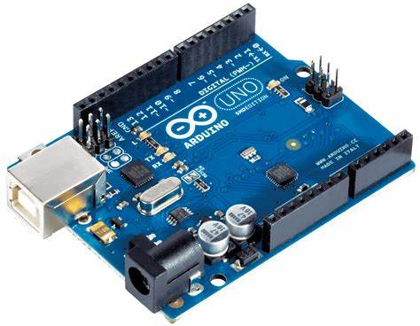

Esp-32
El ESP32 es un microcontrolador (SoC) desarrollado por Espressif Systems, conocido por su capacidad de conectividad Wi-Fi y Bluetooth integrada, lo que lo hace ideal para aplicaciones de Internet de las Cosas (IoT).

Arduino
Arduino es una plataforma de electrónica de código abierto que facilita la creación de proyectos interactivos. Está basada en hardware y software fáciles de usar, lo que la hace accesible tanto para principiantes como para expertos.
